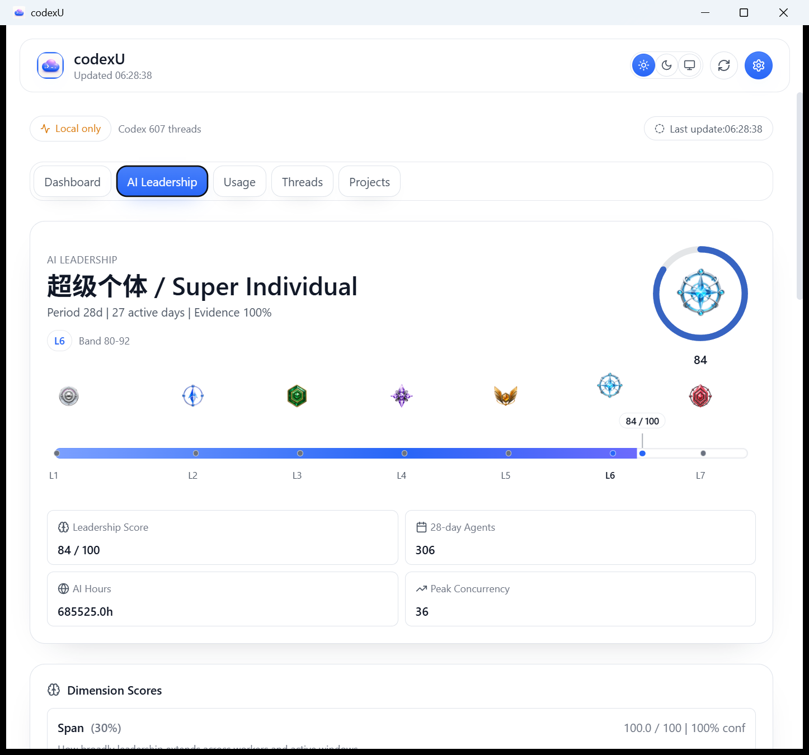
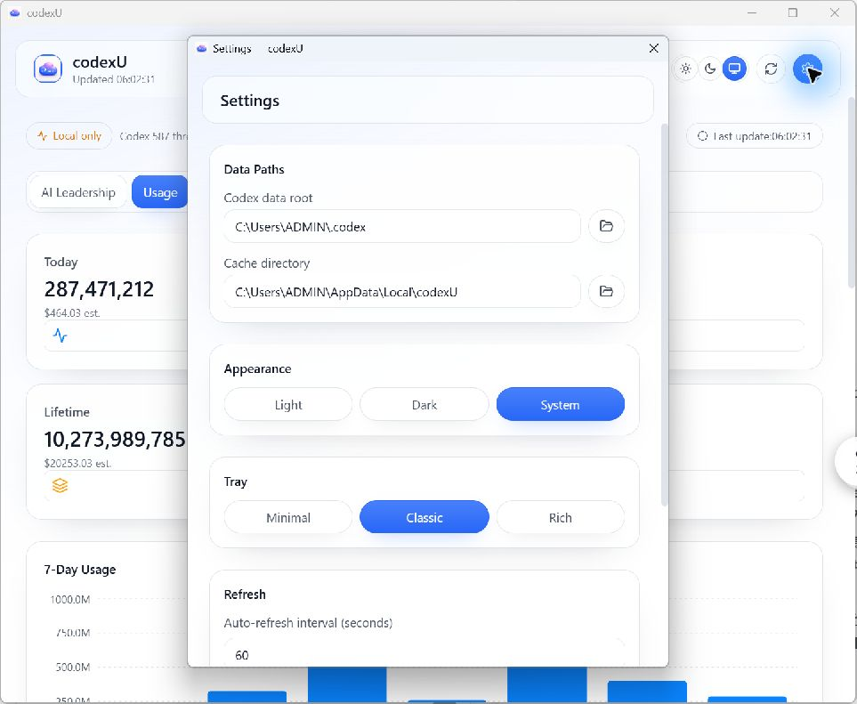

macOS 与 Windows 功能对照 / 信息层级对齐
本页为纯文档任务，不改源码、不改截图资产、不改 data path，仅对齐“功能语义与信息层级”。不是像素级复刻。
- 对比范围：AI Leadership、Dashboard/Token mix、Settings（3 项功能）。
- 证据范围：已存在截图与报告文件，仅引用，不新增验证结果。
- 现有边界：不执行字段级配额映射，不主张 raw 字段一致。
1) 参考资料与现有验收边界
- 截图来源：docs/screenshot-v1.2.0-ai-leadership.png、docs/screenshot-v1.1.0-palette-gallery.png、docs/windows-port/reports/assets/*
- 证据文件：WINDOWS_DASHBOARD_SHOWCASE.md、WINDOWS_DASHBOARD_SHOWCASE.html、WINDOWS_UI_PARITY_REPORT.md、WINDOWS_UI_PARITY_REPORT.html
2) AI Leadership：identity/score → L1-L7 → 2x2 metrics


对齐点
- identity / score 与 L1-L7 横向进度语义保持一致。
- AI Leadership 细节保留 2×2 指标区块。
- 可引用 canonical 阈值：0/20/35/50/65/80/93，示例 score 84 落在 L6。
明确保留的差异
- Windows 使用 native light/system Liquid Glass，不做暗色 macOS 像素镜像。
3) Dashboard / Token mix：领导力优先、中心用量焦点、紧随进度/趋势

说明：复用同一 macOS 参考图是有意为之，不是功能重复；该图同时覆盖 Leadership 与 Dashboard 顶层层级语义。
对齐点
- 首页显示顺序与信息取向均指向“领导力 → 用量核心 → 进度/趋势衔接”。
- Windows 用量展示是本地 7-day Token mix（Input / Cached input / Output）。
明确保留的差异 / 已知范围
- 不能把 Windows token mix 字段与官方配额/remaining allowance 逐项宣称一致，本页不作该项映射。
- 未执行手工像素 diff，边界仅到语义/层级对齐。
4) Settings：配色与设置入口可比性


对齐点
- 两端均可见设置相关入口与配色层级。
- 可读性层级（标题、分组、选择区域）可用于对照。
明确保留的差异
- 不主张设置面板逐控件完全一致，当前仅对比信息组织与可读性层级。
为什么不含 README 的 Today / Projects / Skills 历史截图
- 本轮未制作同轮同视角的 Windows 历史截图证据，因此不纳入该部分对比。
- 这表示“证据边界”而非“功能缺失判断”。